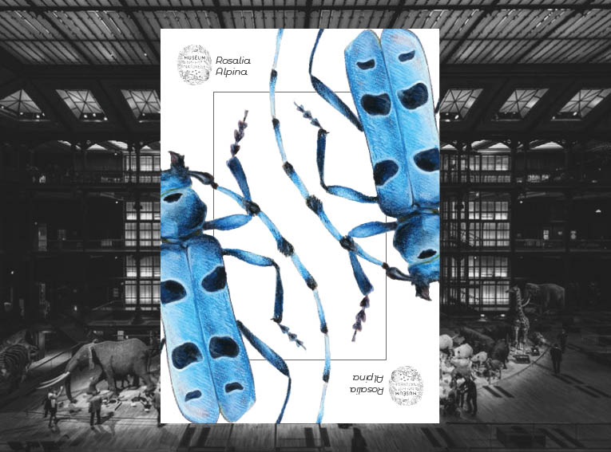
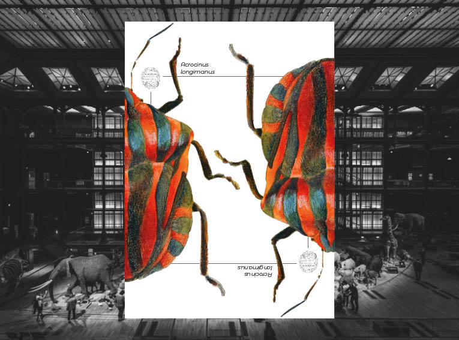
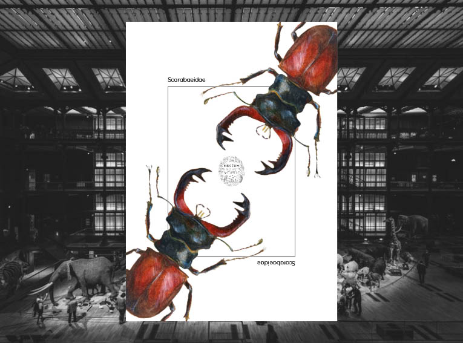
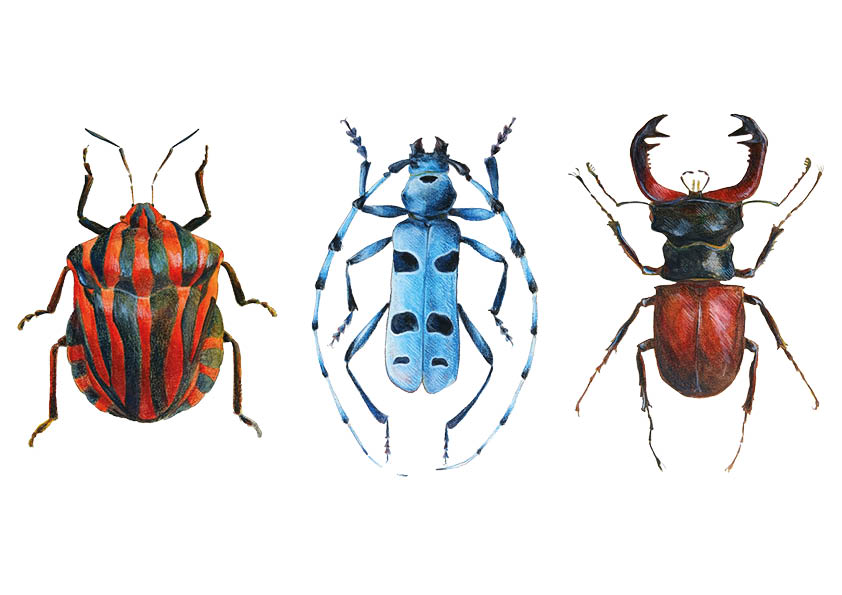

-AFFICHES-
November 2025
Following the creation of a series of illustrations on insects, I sought to use them to highlight the diversity of the collections at the Museum of Natural History in Paris, and to give insects the same status as works of art.



